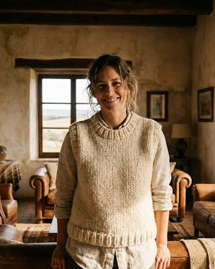
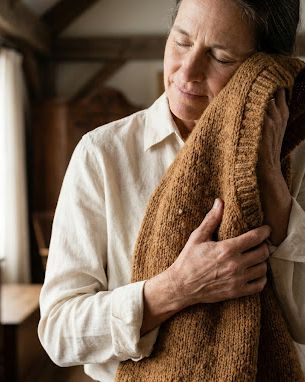

★★★★★
"La suavidad de la lana es incomparable. Se siente el peso de lo artesanal, es una caricia constante. El color crudo es exactamente lo que buscaba para mis inviernos en el campo."
Piezas nobles, tejidas a mano en Entre Ríos. Lana hilada a mano, una a una, pensada para durar toda la vida.

"La suavidad de la lana es incomparable. Se siente el peso de lo artesanal, es una caricia constante. El color crudo es exactamente lo que buscaba para mis inviernos en el campo."
"Buscaba una prenda que resistiera el paso del tiempo. Este chaleco no solo abriga, cuenta una historia. La calidad del hilado a mano se nota en cada detalle."

"Es más que una prenda, es un refugio. La textura de la lana es rústica pero increíblemente elegante. No me lo saco en todo el día."